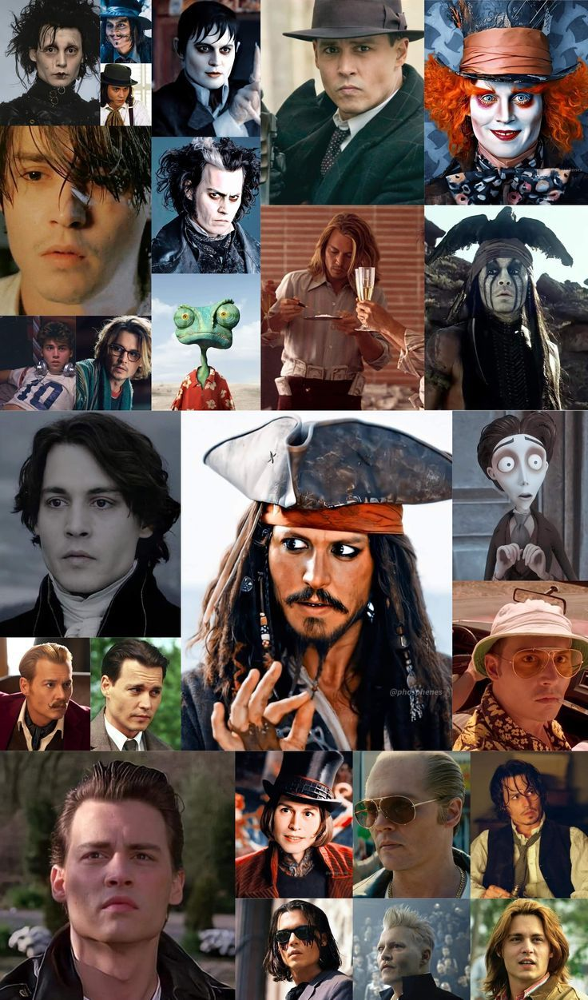
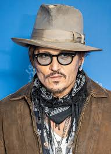

Early Life
Johnny Depp was born on June 9, 1963, in Owensboro, Kentucky, USA. He was the youngest of four children. Depp's family frequently moved during his childhood, and they eventually settled in Miramar, Florida. Depp's early life was marked by a passion for music, and he initially aspired to be a musician rather than an actor.
Career
Johnny Depp's acting career began in the early 1980s when he was cast in the horror film A Nightmare on Elm Street (1984). He gained recognition for his role in the television series 21 Jump Street (1987–1990). However, it was his collaboration with director Tim Burton that solidified Depp's status as a Hollywood icon. Together, they created some of the most memorable characters in film history.

Personal Life
Johnny Depp's personal life has been the subject of much media attention. He has been in several high-profile relationships, including with actress Winona Ryder and French singer Vanessa Paradis, with whom he has two children. Depp is also known for his philanthropy and support for various charitable causes.
